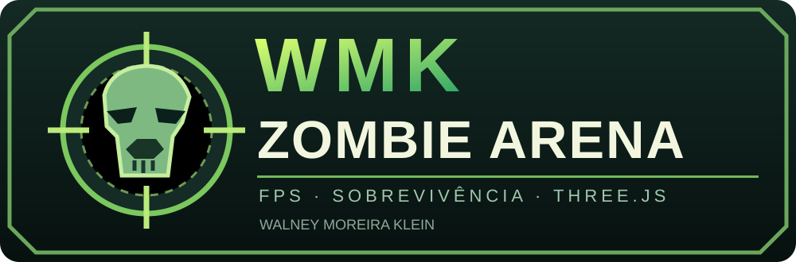

☣ ZOMBIE STUDIO v1.8.6Editor de mapasJogoManual HTMLModelo 3D geométrico para testes. Para usar Blender, exporte GLB e publique em assets/models/.
O caminho é salvo no JSON; o GLB precisa estar junto do projeto. O modelo oficial continua disponível como fallback.
Cada ponto de spawn do mapa pode escolher um ou vários destes tipos.